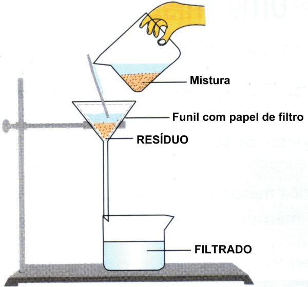
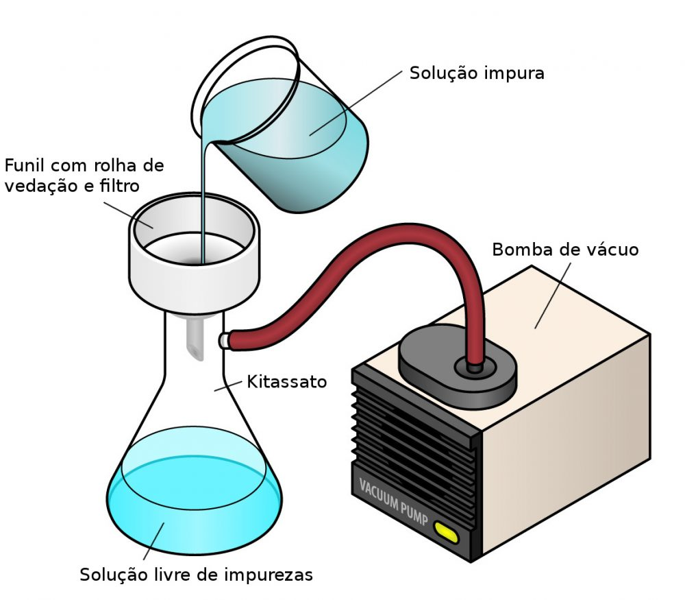

Filtração
O que é a filtração
Filtração é um método de separação de substâncias presentes em uma mistura heterogênea (possui duas ou mais fases) que apresenta pelo menos dois componentes em estados físicos diferentes, como: Um componente no estado sólido e um no estado líquido. Um exemplo de mistura com essa característica é a água com areia.
Usos da filtração no dia a dia
-
Filtração da água em filtros domésticos
-
Preparo do café
-
Uso do filtro de ar nos veículos
-
Uso do aspirador de pó, que possui filtro de ar
Filtração Simples e a Vácuo
Existem dois tipos de filtração: a comum e a vácuo. A filtração comum é a simples passagem da mistura por um funil com papel de filtro a vácuo onde os sólidos ficam retidos.
Já a filtração a vácuo é feita usando-se um funil de Buchner acoplado a um kitassato, que, por sua vez, está acoplado a uma trompa de água que arrasta o ar de dentro do kitassato, causando uma região de pressão baixa. Essa diferença de pressão leva à sucção do líquido da mistura e acelera o processo de filtração.
